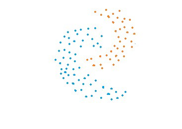
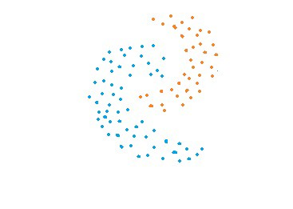
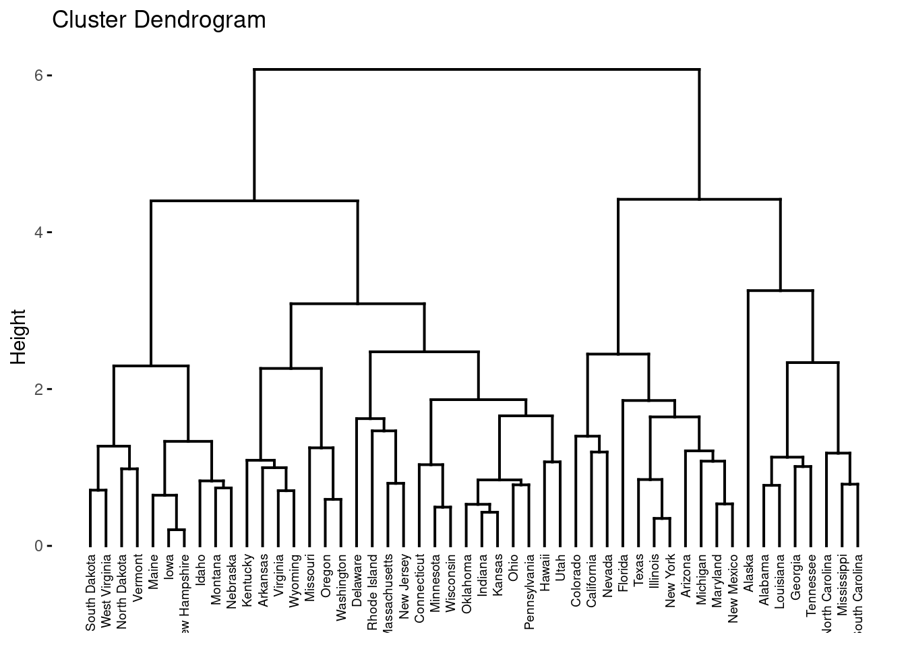
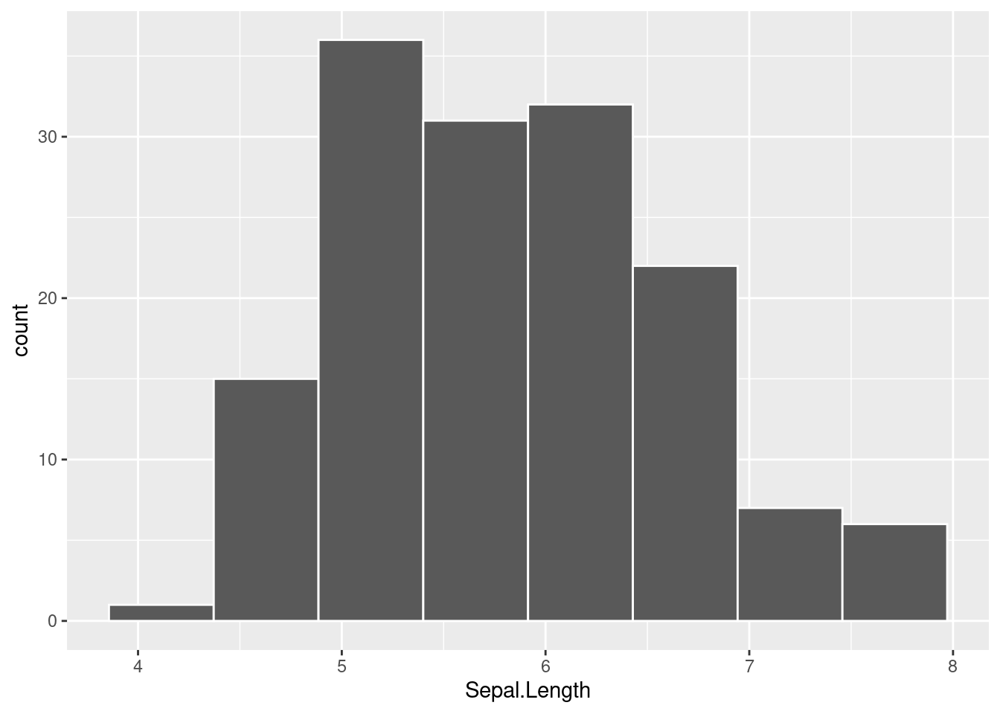

Capítulo 5 Clustering Jerárquico
En esta sección se analizarán diferentes metodologías que tienen como propósito realizar segmentaciones de unidades de manera jerárquica, es decir, a partir de un único grupo se van agrupando o separando los individuos dependiendo de qué tan lejanos o cercanos se encuentran unos de otros. A diferencia del clustering por partición (no jerárquico), este no requiere de la pre-especificación del número de clusters a producir.
El clustering jerárquico se divide en dos tipos:
1) Clustering aglomerativo.
2) Clustering divisivo.
Las principales metodologías a revisar serán:
Liga simple o vecino más cercano
Liga compleja o vecino más lejano
Liga promedio
Liga centroide
Varianza mínima de Ward

 

A partir del concepto de distancia entre puntos en un espacio de N dimensiones (variables), se realiza la agrupación de elementos para posteriormente calcular cuántos grupos es conveniente usar. Este proceso puede ser graficado de múltiples formas, sin embargo, la visualización más usada corresponde al dendograma, el cual es un gráfico como el presentado a continuación:

El eje horizontal representa los puntos de datos.
La altura a lo largo del eje vertical representa la distancia entre los grupos.
Las líneas verticales en el gráfico representan grupos.
La altura de estas líneas representa la distancia desde el grupo más cercano.
Podemos encontrar el número de conglomerados que mejor representan los grupos en los datos usando el dendrograma.

Las líneas verticales con las mayores distancias entre ellas, es decir, la mayor altura en el mismo nivel, dan el número de grupos que mejor representan los datos.
5.1 Agglomerative & Divise Clustering
El cluster aglomerativo es el tipo de clustering jerárquico más comúnmente usado para agrupar objetos en clusters basados en su similitud. También es conocido como AGNES (Agglomerative Nesting). El inverso del agrupamiento aglomerativo es el agrupmiento divisivo, en cual es conocido también como DIANA (Divise Analysis).
5.1.1 Algoritmo
Este algoritmo AGNES funciona de la manera “bottom-up”. Esto es:
cada objeto es inicialmente considerado como un cluster de único elemento (hoja).
En cada paso del algoritmo, los 2 clusters que son más similares son combinados en uno nuevo más grande.
El paso anterior es repetido hasta que todos los puntos son miembros de un único y gran cluster.
Mientras que el algoritmo DIANA es del tipo top-down, funcionando de la siguiente manera:
Comienza con una raíz, en la que todos los elementos están incluidos en el mismo grupo.
En cada paso del algoritmo, los 2 clusters que son más disimilares son divididos en dos nuevos grupos.
El paso anterior es repetido hasta que todos los puntos son un cluster de elemento único en sí mismos.
¡¡ TIP !!
Clustering aglomerativo es bueno en identificar pequeños clusters
Clustering divisivo es bueno para detectar los clusters grandes.
5.2 Implementación en R
En esta sección se revisan las librerías y funciones que hacen posible estos algoritmos. Como metodología general, tenemos los siguientes pasos:
Preparación de datos
Cálculo de (di)similitudes entre pares de objetos en el conjunto de datos
Uso de función liga para agrupar los objetos en un árbol jerárquico basado en la distancia generada en los pasos anteriores.
Determinar el umbral de corte del árbol jerárquico para la creación de grupos.
5.2.1 Preparación y estructuración de datos
Los datos deben ser presentados en un formato matricial, en donde los renglones representan a las observaciones y las columnas a las variables.
data("USArrests")
df <- scale(USArrests)
head(df)## Murder Assault UrbanPop Rape
## Alabama 1.24256408 0.7828393 -0.5209066 -0.003416473
## Alaska 0.50786248 1.1068225 -1.2117642 2.484202941
## Arizona 0.07163341 1.4788032 0.9989801 1.042878388
## Arkansas 0.23234938 0.2308680 -1.0735927 -0.184916602
## California 0.27826823 1.2628144 1.7589234 2.067820292
## Colorado 0.02571456 0.3988593 0.8608085 1.8649672075.2.2 Medidas de (di)similaridad
Con el fin de decidir qué elementos deben ser combinados o divididos, se requieren métodos para medir la similaridad entre objetos. Existen muchos métodos para calcular la (di)similaridad de la información. Estas métricas ya se han considerados en capítulos anteriores.
En R, se puede usar la función dist() para calcular la distancia entre cada par de objetos en un conjunto de datos. El resultado de este cálculo es conocido como matriz de distancia de similitud.
res_dist <- dist(df, method = "euclidian")
as.matrix(res_dist)[1:6, 1:6]## Alabama Alaska Arizona Arkansas California Colorado
## Alabama 0.000000 2.703754 2.293520 1.289810 3.263110 2.651067
## Alaska 2.703754 0.000000 2.700643 2.826039 3.012541 2.326519
## Arizona 2.293520 2.700643 0.000000 2.717758 1.310484 1.365031
## Arkansas 1.289810 2.826039 2.717758 0.000000 3.763641 2.831051
## California 3.263110 3.012541 1.310484 3.763641 0.000000 1.287619
## Colorado 2.651067 2.326519 1.365031 2.831051 1.287619 0.000000Esta función usa los métodos de distancia:
Euclidiana
Máxima
Manhattan
Canberra
Binaria
Minkowski
Es importante mencionar que existen otras distancias como la geodésica que pueden implementarse a partir de otras librerías. Para distancias cortas y en general, la distancia euclidiana funciona muy bien.
5.2.3 Función Liga
La función liga toma la información de la distancia que regresa de la función dist() y agrupa pares de objetos en clusters basados en su similaridad. Posteriormente, estos clusters nuevos son ligados a otros para crear clusters más grandes. Este proceso es iterativo hasta que todos los objetos en el conjunto original de datos son ligados juntos en un árbol jerárquico. Este proceso se lleva a cabo con la función: hclust().
res_hc <- hclust(d = res_dist, method = "complete")
res_hc##
## Call:
## hclust(d = res_dist, method = "complete")
##
## Cluster method : complete
## Distance : euclidean
## Number of objects: 50Donde:
d: Es la estructura de disimilaridad producida por la función dist()
method: El método de liga de aglomeración a ser usado para el cálculo de distancia entre clusters. Los siguientes valores están permitidos: “single”, “complete”, “average”, “median”, “centroid”, “ward.D”, “ward.D2”.
Existen múltiples métodos de aglomeración (i.e. métodos liga). Los más comunes se describen a continuación:
- Liga máxima o completa: La distancia entre dos clusters es definida como el valor máximo de todos los pares de distancia entre los elementos dentro del cluster 1 y los elementos en el cluster 2. Tiende a producir clusters compactos.

- Liga mínima o simple: La distancia entre dos clusters es definida como el valor mínimo de todas las parejas de distancias entre los elementos en el cluster 1 y los elementos en el cluster 2. Tiende a producir clusters largos o pobres.

- Liga promedio o media: La distancia entre dos clusters es definida como la distancia promedio entre los elementos en el cluster 1 y los elementos en el cluster 2.
\[Dist(C_1, C_2)= \frac{1}{n_1+n_2}\sum_{i=1}^{n_1}{\sum_{j=1}^{n_2}{D(i,j)}}\]

- Liga centroide: La distancia entre dos clusters está definida como la distancia del centroide del cluster 1 (un vector de medias con tamaño de p variables) y el centroide del cluster 2.

- Método de varianza mínima de Ward: Este método en vez de analizar la distancia entre grupos, analiza la varianza, por lo que se encarga de minimizar el total de la varianza intra-cluster (inercia). En cada paso, el par de clusters con distancia mínima entre clusters son unidos. Este método dice que la distancia entre dos clusters A y B, es qué tanto la varianza respecto del centroide incrementará cuando sean unidos.

Sin importar el método usado, en cada etapa del proceso de clustering, los 2 elementos con la distancia liga más corta son unidos en un solo cluster.
¡¡ TIP !!
Las ligas: completa y Ward´s son preferidas generalmente
5.3 Dendogramas
La manera gráfica de representar el proceso de clustering jerárquico es mediante un dendograma. Los dendogramas pueden ser creados en R a partir de la función genérica plot(), sin embargo, se mostrarán otras funciones más novedosas para crear gráficos de mayor calidad.
library(factoextra)
fviz_dend(res_hc, cex = 0.5)
En el dendograma superior cada hoja corresponde a un objeto. En la medida en que nos movemos hacia arriba en el árbol, los objetos que son similar a otros están combinados en ramas, las cuales se fusionan a mayor altura.
La altura de la fusión, proveída en el eje vertical, indica la (di)similaridad/distancia entre dos objetos/clusters. Entre más alta sea la altura de la fusión, menos similares son los objetos/clusters. Esta altura es conocida como la distancia de cophenetic entre dos objetos.
A fin de identificar sub-grupos, se puede cortar el dendograma en cierta altura, como se describe en las siguientes secciones.
Para validar que las distancias en la altura reflejen las distancias originales de manera precisa, se hace uso de la correlación entre las distancias originales y la distancia de cophenetic:
res_coph <- cophenetic(res_hc)
as.matrix(res_coph)[1:6, 1:6]## Alabama Alaska Arizona Arkansas California Colorado
## Alabama 0.000000 3.255433 4.420074 6.076642 4.420074 4.420074
## Alaska 3.255433 0.000000 4.420074 6.076642 4.420074 4.420074
## Arizona 4.420074 4.420074 0.000000 6.076642 2.445860 2.445860
## Arkansas 6.076642 6.076642 6.076642 0.000000 6.076642 6.076642
## California 4.420074 4.420074 2.445860 6.076642 0.000000 1.398859
## Colorado 4.420074 4.420074 2.445860 6.076642 1.398859 0.000000cor(res_coph, res_dist)## [1] 0.6979437Ejercicio
- Usar las distintas ligas y determinar cuál de ellas funciona mejor (Hint: La que muestre correlación más alta entre las distancias originales y la distancia cophenetica)
5.3.1 Selección de grupos
Uno de los problemas del clustering jerárquico es que, NO dice cuántos clusters hay o dónde cortar el dendograma para formar los clusters.
Es posible cortar el árbol jerárquico a una altura dada con el fin de particionar los datos en clusters. La función cutree() puede ser usada para cortar el árbol en varios grupos al especificar ya el número deseado de grupos o la altura a cortar. Esta función regresa un vector que contiene el número de cluster de cada observación.
groups_1 <- cutree(res_hc, k = 4)
head(groups_1)## Alabama Alaska Arizona Arkansas California Colorado
## 1 1 2 3 2 2table(groups_1)## groups_1
## 1 2 3 4
## 8 11 21 10fviz_dend(
res_hc,
k = 4,
cex = 0.5,
k_colors = c("red", "blue", "green", "purple"),
color_labels_by_k = TRUE,
rect = TRUE
)fviz_dend(
res_hc,
h = 7,
cex = 0.5,
k_colors = c("red", "blue"),
color_labels_by_k = TRUE,
rect = TRUE,
rect_border = c("red", "blue"),
rect_fill = T,
horiz = T
)Algunas variaciones estéticas sobre un dendograma se pueden realizar al cambiar determinados parámetros. Por ejemplo:
fviz_dend(
res_hc,
k = 4,
cex = 0.5,
k_colors = "jco",
type = "circular",
show_labels = TRUE
)
fviz_dend(
res_hc,
k = 4,
cex = 0.5,
k_colors = "jco",
type = "phylogenic",
phylo_layout = "layout.gem",
repel = T,
show_labels = TRUE
)Usando la función f_viz_cluster() también es posible visualizar los clusters a través de un gráfico de dispersión. Las observaciones son presentadas en puntos usando el análisis de componentes principales.
fviz_cluster(
list(data = df, cluster = groups_1),
palette = c("red", "blue", "green", "purple"),
ellipse.type = "convex",
repel = T,
show.clust.cent = F
)Finalmente, es importante mencionar que la librería cluster ofrece un par de funciones que resumen todo el proceso anterior (scale, dist y hclus). Las funciones se usan de la siguiente forma:
library(cluster)
res_agnes <- agnes(
x = USArrests,
stand = T,
metric = "euclidian",
method = "ward"
)
res_diana <- diana(
x = USArrests,
stand = T,
metric = "euclidian"
)
fviz_dend(
res_diana,
cex = 0.6,
k = 4,
color_labels_by_k = TRUE,
rect = TRUE
)
5.4 Comparación de dendogramas
Luego de aprender a crear dendogramas, se procederá a comparar dos dendogramas usando la librería dendextend, la cual proveé las funciones tanglegram() y cor.dendlist().
library(dendextend)
set.seed(15937)
df2 <- df[sample(1:50, 30),]
res_dist2 <- dist(df2, method = "euclidian")
hc1 <- hclust(res_dist2, method = "average")
hc2 <- hclust(res_dist2, method = "ward.D")
hc3 <- hclust(res_dist2, method = "complete")
hc4 <- hclust(res_dist2, method = "median")
dend1 <- as.dendrogram(hc1)
dend2 <- as.dendrogram(hc2)
dend3 <- as.dendrogram(hc3)
dend4 <- as.dendrogram(hc4)
dend_list <- dendlist(
"average" = dend1,
"ward´s" = dend2,
"complete" = dend3,
"median" = dend4
)
tanglegram(
dend1,
dend2,
sort = T,
margin_inner = 6.5,
highlight_distinct_edges = F,
common_subtrees_color_lines = T,
common_subtrees_color_branches = T,
main = "Vs",
main_left = "Average Linkage",
main_right = "Ward´s Linkage",
)A partir del gráfico anterior, se realiza la comparación de la diferencia en la ubicación de algunos elementos. Esta diferencia dependerá por completo de la metodología de aglomeración utilizada.
Otra forma de comparar la similitud entre clusters es a partir de una matriz de correlaciones.
library(corrplot)
cors <- cor.dendlist(dend_list, method = "cophenetic")
cors## average ward´s complete median
## average 1.0000000 0.93419413 0.5738468 0.12344011
## ward´s 0.9341941 1.00000000 0.5415380 0.08524404
## complete 0.5738468 0.54153798 1.0000000 0.16924366
## median 0.1234401 0.08524404 0.1692437 1.00000000corrplot(
corr = cors,
method = "ellipse"
) Ejercicio:
Ejercicio:
Comparar clusters de Marginación de entidades con clusters de CONAPO y comparar interpretaciones de cada grupo
5.5 Heatmaps
Otro modo de visualizar el clustering jerárquico es a través de los mapas de color. Existen diversas alternativas para mostrar estas aglomeraciones. Los heatmaps, permiten visualizar clusters de individuos y de características. Las funciones implementadas son:
- gplots::heatmap.2()
- pheatmap::pheatmap()
- d3heatmap::d3heatmap()
- ComplexHeatmap::Heatmap()
En las siguientes secciones se mostrarán diversas visualizaciones de clusters, las cuales podrán ser por individuos, por características o ambas. Como primer paso, se comienza con la preparación de datos.
library(readr)
library(dplyr)
library(gplots)
library(sf)
indice_marg <- st_read('data/IMEF_2010.dbf', quiet = TRUE)
indice_marg %>% glimpse()## Rows: 32
## Columns: 16
## $ CVE_ENT <chr> "01", "02", "03", "04", "05", "06", "07", "08", "09", "10", "1…
## $ AÑO <int> 2010, 2010, 2010, 2010, 2010, 2010, 2010, 2010, 2010, 2010, 20…
## $ POB_TOT <int> 1184996, 3155070, 637026, 822441, 2748391, 650555, 4796580, 34…
## $ ANALF <dbl> 3.274040, 2.600783, 3.234464, 8.370643, 2.645050, 5.157943, 17…
## $ SPRIM <dbl> 14.754823, 12.987567, 14.273833, 22.541207, 12.168029, 18.4761…
## $ OVSDE <dbl> 1.0649743, 0.4322072, 0.9436751, 6.4196750, 1.0916308, 0.68577…
## $ OVSEE <dbl> 0.62347891, 0.94517891, 2.84464884, 2.59080046, 0.53707721, 0.…
## $ OVSAE <dbl> 0.9854257, 3.5616214, 7.0865085, 9.7378176, 1.3908497, 1.17060…
## $ VHAC <dbl> 30.33066, 29.05839, 31.73806, 45.96720, 30.26891, 31.32052, 53…
## $ OVPT <dbl> 1.761813, 3.398537, 5.814081, 4.500699, 1.423701, 4.691477, 15…
## $ PL_5000 <dbl> 25.1626166, 10.3491523, 15.6188287, 30.8755279, 12.1486353, 14…
## $ PO2SM <dbl> 33.64880, 21.86970, 23.29986, 45.51076, 30.04270, 32.04402, 69…
## $ IM <dbl> -0.91086057, -1.14014880, -0.68128749, 0.43357139, -1.14000448…
## $ GM <chr> "Bajo", "Muy bajo", "Bajo", "Alto", "Muy bajo", "Bajo", "Muy a…
## $ LUGAR <int> 28, 30, 23, 10, 29, 26, 2, 21, 32, 15, 14, 1, 6, 27, 22, 8, 19…
## $ NOM_ENT <chr> "Aguascalientes", "Baja California", "Baja California Sur", "C…df <- indice_marg %>%
select(ANALF:PO2SM) %>%
scale(center = TRUE, scale = TRUE)
row.names(df) <- indice_marg$NOM_ENT
heatmap.2(
df,
scale = "none",
cexCol = 0.7,
cexRow = 0.5,
main = "Heatmap - Marginación",
col = bluered(32),
trace = "none",
density.info = "none"
)El dendograma anterior tiene la ventaja de ser simple y limpio. Los parámetros son sencillos.
library(pheatmap)
pheatmap(
df,
cutree_rows = 5,
cutree_cols = 2,
clustering_distance_rows = "euclidean",
clustering_distance_cols = "euclidean",
clustering_method = "ward.D",
main = "Heatmap - Ward´s Clustering"
)Este segundo dendograma es uno de los más limpios y completos que hay. Se segmentan tanto renglones como columnas de acuerdo con la metodología específicada de clustering.
# devtools::install_github("talgalili/d3heatmap")
library(d3heatmap)
d3heatmap(
df,
k_row = 5,
k_col = 2,
main = "Interactive Heatmap",
xlab = "Variables",
ylab = "Entidades",
cexRow = 0.7,
cexCol = 0.7
)Como tercer opción, se encuentra el dendograma interactivo, el cual es ampliamente usado en documentos HTML como estas notas (Bookdown), Rmarkdown o Shiny. Aunque logra segmentar las ramas de los clusters, no muestra el espacio entre renglones o columnas que permite agilizar la lectura de grupos.
# devtools::install_github("jokergoo/ComplexHeatmap")
library(ComplexHeatmap)
Heatmap(
df,
split = indice_marg %>%
mutate(GM = case_when(
GM == "Muy bajo" ~ "MB",
GM == "Bajo" ~ "B",
GM == "Medio" ~ "M",
GM == "Alto" ~ "A",
GM == "Muy alto" ~ "MA"
)) %>% pull(GM),
name = "Scale",
clustering_distance_rows = "euclidean",
clustering_method_rows = "ward.D",
column_title = "Variables",
row_title_gp = gpar(fontsize = 12),
column_title_gp = gpar(fontsize = 12),
row_names_gp = gpar(fontsize = 8)
)
El último de los dendogramas presentados permite separar los renglones o columnas de acuerdo con alguna variable auxiliar especificada, lo cual puede servir para otro tipo de análisis cruzados.
Será responsabilidad de cada usuario determinar cuál es el dendograma que aporta más valor al análisis o reporte que está siendo presentado.